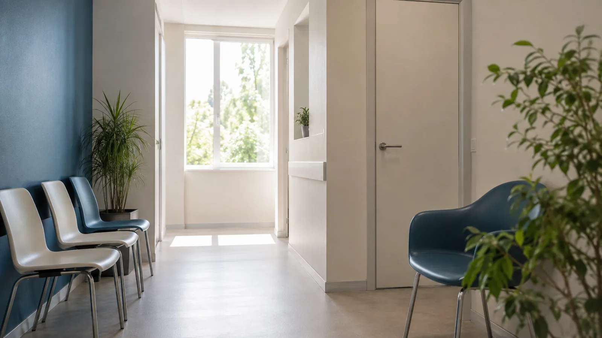
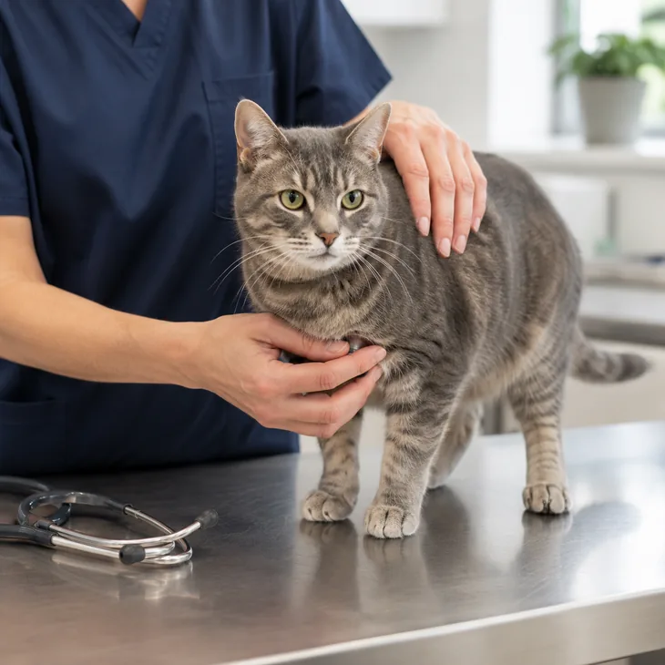
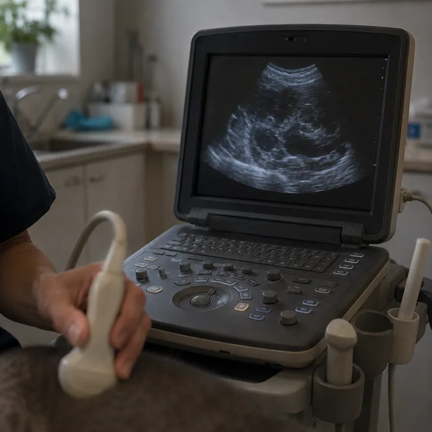
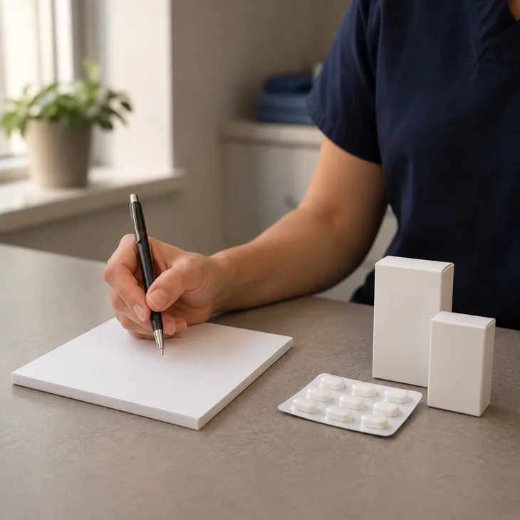

Ветеринарная клиника · Нижнекамск
Лечим бережно. Считаем честно.
Приём, УЗИ, рентген и анализы за один визит. Хирургия, стационар и аптека — в том же здании, на Первопроходцев, 26.
Сегодня принимаем до 20:00
Когда питомцу резко становится плохо, самое тяжёлое — не диагноз. Тяжело то, что вечером непонятно, кто вообще примет, куда ехать и во сколько это обойдётся.
- 21:40 кот не ест третий день
- 22:10 гуглите «ветеринар срочно»
- 22:30 звоните, никто не отвечает
Питомцу плохо прямо сейчас?
Позвоните — примем вне очереди и скажем, что делать по дороге.
До приезда
- не кормить и не поить насильно
- не давать человеческие лекарства
- записать, когда начались симптомы
Что происходит с питомцем?
Не ждите. Выезжайте.
Позвоните с дороги — подготовимся к вашему приезду и скажем, что делать в пути.
Позвонить сейчасПозвоните сегодня.
По телефону разберёмся, нужно ли ехать прямо сейчас или можно записаться на ближайшее время.
+7 987 215-22-77Это плановый визит.
Позвоните, чтобы выбрать удобное время и уточнить, нужна ли подготовка.
ЗаписатьсяВыберите пункт — подскажем, насколько это срочно.
Это подсказка по срочности, а не диагноз. Сомневаетесь — звоните, разберёмся по телефону.
Всё, что нужно питомцу, — в одном здании
Диагностика, операция, восстановление и препараты — на одном адресе. Ездить между кабинетами по городу не нужно.
-

- Приёмная
- УЗИ и рентген
- Лаборатория результат за 30 минут
- Операционная
- Стационар
- Ветаптека
С чем принимают
Профильный врач принимает по записи. Позвоните — подскажем, к кому записаться с вашей проблемой и когда он ведёт приём.
- Терапия
- Хирургия
- Дерматология
- Стоматология
- Офтальмология
- Кардиология
-
Ещё направления
- Гинекология и акушерство
- Аллергология
- Онкология
- Анестезиология
Как проходит визит
-
Звоните
Опишем, что делать прямо сейчас, и назовём время приёма
-

Осмотр
Врач осматривает питомца и объясняет, что видит
-

Диагностика в тот же визит
УЗИ, рентген и анализы — здесь же, ехать никуда не нужно
-

Назначение и контроль
Расписываем лечение и договариваемся о повторном визите
Что взять с собой
Отметки сохранятся в этом браузере — можно собраться заранее и вернуться к списку перед выходом.
Цены
Основные услуги и что входит в каждую. Цену того, чего нет в списке, назовём по телефону.
| Услуга | Что входит | Цена |
|---|---|---|
| Приём и профилактика | ||
| Первичный приём терапевта | осмотр, консультация, план обследования | 600 ₽ |
| Комплексная вакцинация | осмотр, вакцина, отметка в паспорте | 1 900 ₽ |
| Чипирование | чип, регистрация в базе, отметка в паспорте | 1 800 ₽ |
| Диагностика в тот же визит | ||
| УЗИ брюшной полости | заключение на руки в день приёма | 1 500 ₽ |
| Рентген (один снимок) | снимок и описание | 1 200 ₽ |
| Общий анализ крови | результат в день обращения | 900 ₽ |
| Операции «под ключ» и стационар | ||
| Кастрация кота | наркоз · операция · попона · наблюдение · снятие швов | 3 200 ₽ |
| Стерилизация кошки | наркоз · операция · попона · наблюдение · снятие швов | 5 500 ₽ |
| Сутки в стационаре | наблюдение, назначения, отчёт владельцу | 1 400 ₽ |
| Груминг | ||
| Гигиеническая стрижка | по размеру и типу шерсти | от 2 500 ₽ |
Кто принимает
Врач, который вас примет, объясняет, что видит, и почему предлагает именно это лечение. Спросить можно всё — на приёме и после, по телефону.
-
Сафина Гульнара Ринатовна
Главный врач · терапевт · 14 лет в практике
-
Ковалёв Артём Сергеевич
Хирург · анестезиолог · 11 лет в практике
-
Дементьева Ольга Витальевна
УЗ-диагностика · кардиолог · 22 года в практике
Направления приёма: терапия, хирургия, дерматология, офтальмология, кардиология, стоматология, гинекология, аллергология, онкология, анестезиология.
Частые вопросы
Где вы находитесь и как доехать?
Что можно сделать за один визит?
Сколько стоит приём?
Питомцу плохо ночью — что делать?
Что взять с собой на приём?
Как готовить питомца к операции?
Отзыв
«Персонал вежливый, врачи всё подробно объясняют, видно, что животных любят. Есть рентген — это тоже плюс.»
отзыв на 2ГИС · январь 2025
Читать отзывы на 2ГИС →Приезжайте — посмотрим и скажем честно, что происходит.
Часы работы
| Пн–Сб | 10:00–20:00 |
|---|---|
| Вс | 10:00–15:00 |
Экстренные случаи принимаем вне очереди.